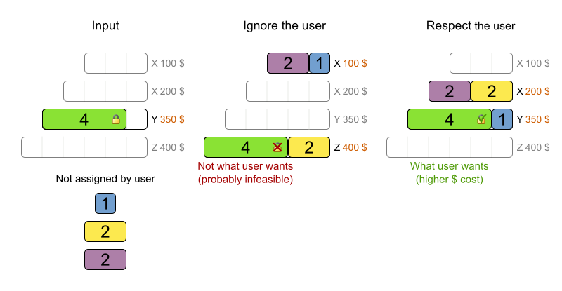
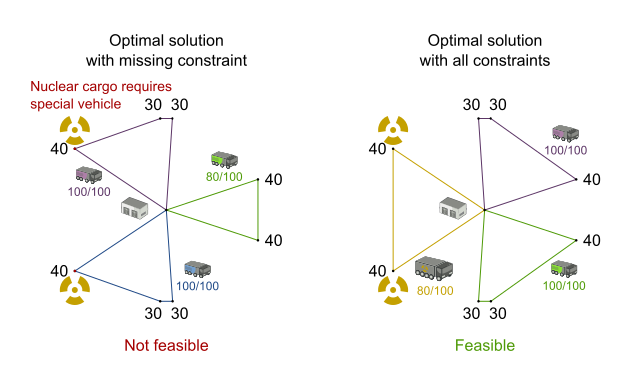
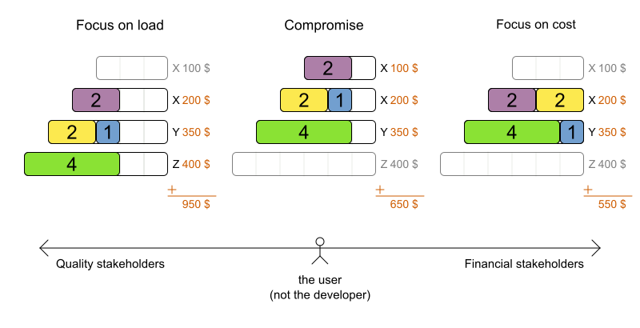
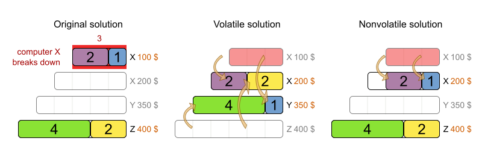
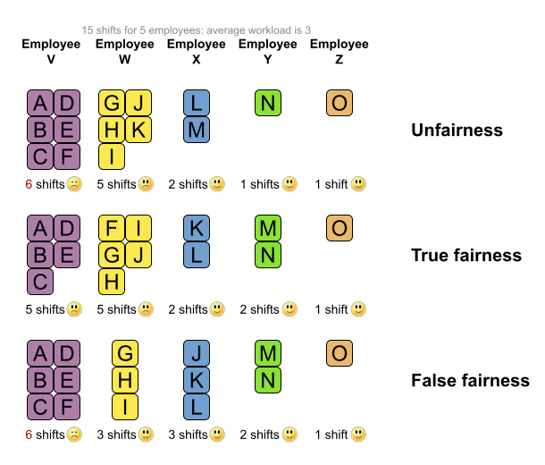

7 ways to fail your optimization project
When you put your optimization project into production,
your enterprise will decrease expenses, increase customer satisfaction,
improve employee happiness and/or reduce its ecological footprint.
But if the end-users reject your implementation, none of that will happen.
Let’s take a look why they might do that.
your enterprise will decrease expenses, increase customer satisfaction,
improve employee happiness and/or reduce its ecological footprint.
But if the end-users reject your implementation, none of that will happen.
Let’s take a look why they might do that.
There are 7 common ways to fail your optimization project:
- Ignore the user’s plan
- Neglect a hard constraint
- Decide all score weights up front
- Change tentative plans drastically
- Presume there is always a feasible plan
- Average out fairness or load balancing
- Focus on only 1 stakeholder
Let’s take a look at each one in detail and the 7 ways to make your project a success:
1. Keep the user in control
Initially, nobody trusts a new system that takes input (the planning problem) and produces output (the solution)
through a non-obvious transformation.
To build this trust, allow the user to override OptaPlanner’s choices.
through a non-obvious transformation.
To build this trust, allow the user to override OptaPlanner’s choices.
For example in Cloud Balancing, if the user locks the green process to computer Y,
the planning engine must respect that:
the planning engine must respect that:

It’s not an all-or-nothing situation: the user and OptaPlanner work together
(and the user is in charge). For a detailed use case, see this blog with video.
(and the user is in charge). For a detailed use case, see this blog with video.
Technically, this is implemented through immovable planning entities (as explained in the OptaPlanner reference manual):
a simple boolean method that checks if the process is pinned.
a simple boolean method that checks if the process is pinned.
2. Implement all hard constraints
An optimal solution that takes only 99% of the hard constraints into account is 100% useless.
So implement all hard constraints.
So implement all hard constraints.
For example in Vehicle Routing, let’s suppose we need to pickup nuclear cargo too,
but forget to add a hard constraint to pick those up with a special vehicle:
but forget to add a hard constraint to pick those up with a special vehicle:

As you can see, taking that extra hard constraint into account can change the optimal solution entirely.
Technically, OptaPlanner supports any type of constraint: unlike other solvers, it doesn’t care if the constraint is linear, quadratic or worse.
As long as it can compare the score of any 2 solutions, it finds the best one.
That enables you to implement all constraints: none will be out of reach.
As long as it can compare the score of any 2 solutions, it finds the best one.
That enables you to implement all constraints: none will be out of reach.
3. Don’t hard-code the score weights
Most business people can’t tell us the best score weights until they’ve seen the impact of those weights on their schedule.
So allow the user to change the score weights at runtime and quickly see the effect of his/her changes on the solution.
So allow the user to change the score weights at runtime and quickly see the effect of his/her changes on the solution.
For example in Cloud Balancing: should we focus on load balancing or on cost reduction?

Some constraints work together, others work against each other.
Especially for that last kind (as shown above), different stakeholders within the same enterprise can disagree on the score weights.
Empower the project owner to settle those negotiations by directly changing the weights in the UI.
Especially for that last kind (as shown above), different stakeholders within the same enterprise can disagree on the score weights.
Empower the project owner to settle those negotiations by directly changing the weights in the UI.
Technically, simply add a singleton with the score weights in the dataset and use those weights in the constraints.
Look for a
Look for a
*ConstraintConfiguration class in some of the OptaPlanner examples.4. Avoid disruption when replanning
At some point, a plan becomes tentative or even final.
Any changes after that point can be very disruptive to anyone involved in that plan.
But ad hoc changes, such as an employee calling in sick or malfunctioning equipment,
will make your plan infeasible and force you to replan it.
Any changes after that point can be very disruptive to anyone involved in that plan.
But ad hoc changes, such as an employee calling in sick or malfunctioning equipment,
will make your plan infeasible and force you to replan it.
For example in Cloud Balancing, a computer might break down:

The middle solution is slightly more cost effective, but the last solution is far less disruptive.
Especially when scheduling people, who planned their social life based on the tentative schedule,
it’s important to minimize disruption.
Especially when scheduling people, who planned their social life based on the tentative schedule,
it’s important to minimize disruption.
Technically, we penalize the number of processes that moved,
by keeping track of the old tentative computer assignment for each process too.
by keeping track of the old tentative computer assignment for each process too.
Another way to make this easier is to also do backup planning.
For example in employee rostering, we assign 3 reserve shifts as backups to 3 employees:
if another employee calls in sick, one of the reserve employees takes over automatically,
without replanning. Only when more than 3 employees call in sick, we actually need to do (non disruptive) replanning.
For example in employee rostering, we assign 3 reserve shifts as backups to 3 employees:
if another employee calls in sick, one of the reserve employees takes over automatically,
without replanning. Only when more than 3 employees call in sick, we actually need to do (non disruptive) replanning.
5. Account for overconstrained planning
It can happen that there aren’t enough resources to solve a planning problem without breaking a hard constraint.
In that case, instead of delivering an infeasible plan, it’s often better to leave some entities unassigned (as little as possible of course).
In that case, instead of delivering an infeasible plan, it’s often better to leave some entities unassigned (as little as possible of course).
For example in employee rostering, when we need to assign 4 late shifts on the same day and we only have 3 employees,
it’s better to leave 1 shift unassigned than to assign an employee to 2 shifts at the same time.
it’s better to leave 1 shift unassigned than to assign an employee to 2 shifts at the same time.
Going one step further, we can add virtual resources to indicate how many extra resources to buy/hire.
For example in the same employee rostering case, we could add 2 virtual employees.
After solving, it will use one of these
which tell us that we can make the schedule feasible again by hiring 1 extra employee.
For example in the same employee rostering case, we could add 2 virtual employees.
After solving, it will use one of these
which tell us that we can make the schedule feasible again by hiring 1 extra employee.
Technically, we need to treat unassigned (or virtual assigned) entities differently in the constraints
and add a medium score level (between hard and soft) to penalize the number of unassigned (or virtual assigned) entities.
and add a medium score level (between hard and soft) to penalize the number of unassigned (or virtual assigned) entities.
6. Be fair (load balancing)
When distributing work across humans (or machines), don’t use averages.
Instead, the worst off human (or machine) counts the most.
Instead, the worst off human (or machine) counts the most.
For example in employee rostering we want to distribute the shifts evenly,
but we can’t make it perfectly fair due to skill and other hard constraints.
It’s not about minimizing overtime on average,
but about minimizing overtime of the worst off employee:
but we can’t make it perfectly fair due to skill and other hard constraints.
It’s not about minimizing overtime on average,
but about minimizing overtime of the worst off employee:

In the last solution, more employees are happy, but the worst employee is worse off, so it’s less fair than the middle solution.
Technically, implement it as explained in the OptaPlanner reference manual:
penalize the square of the number of shifts per employee.
penalize the square of the number of shifts per employee.
7. Create a win-win for all stakeholders
In a big organization, many different groups will want to tune the constraint weights in their favor.
For example: management will often want to maximize cost reduction,
but unions will want to maximize employee happiness and job security.
Whenever possible, aim for a solution that improves the status quo for all stakeholders.
They can always negotiate the tuning of the score weights later.
For example: management will often want to maximize cost reduction,
but unions will want to maximize employee happiness and job security.
Whenever possible, aim for a solution that improves the status quo for all stakeholders.
They can always negotiate the tuning of the score weights later.
In a war story that came to my ear, I’ve heard about a VRP case for inspectors
that heavily reduced driving time to inspection sites, allowing the same work to be done in less time.
Because the prototype focused only on using less inspectors, the unions shot it down.
If instead the prototype had focused on increasing inspection time,
it would have increased inspection quality, reduced worker stress, lowered fuel expenses
and decreased the need for new hires. That’s far more acceptable to all stakeholders.
that heavily reduced driving time to inspection sites, allowing the same work to be done in less time.
Because the prototype focused only on using less inspectors, the unions shot it down.
If instead the prototype had focused on increasing inspection time,
it would have increased inspection quality, reduced worker stress, lowered fuel expenses
and decreased the need for new hires. That’s far more acceptable to all stakeholders.
Conclusion
Project success doesn’t depend on solution quality alone. There are a lot of factors that can make or break a project.
In this article I highlighted some of the more social ones.
Luckily, you can handle these additional requirements with OptaPlanner too.
Don’t let them catch you off guard!
In this article I highlighted some of the more social ones.
Luckily, you can handle these additional requirements with OptaPlanner too.
Don’t let them catch you off guard!
Author

This post was original published on here.